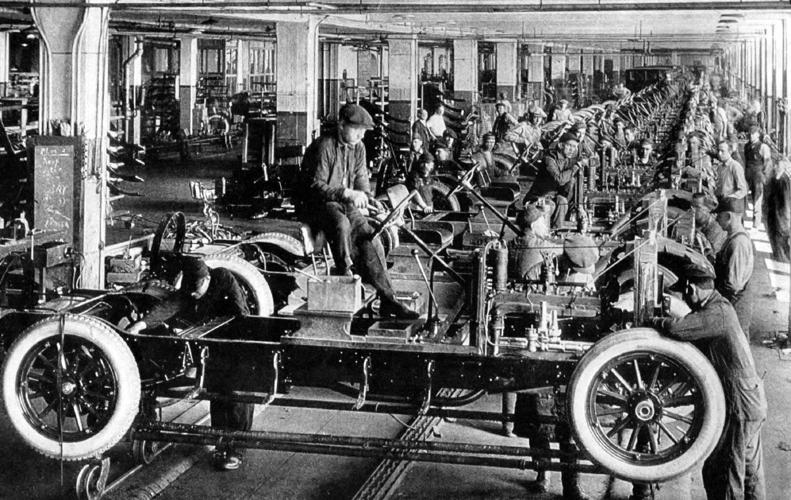

O Fordismo foi o modelo de produção industrial que revolucionou o início do século XX. Criado por Henry Ford em 1913, ele uniu a esteira mecânica aos conceitos de eficiência do Taylorismo, transformando o carro de um item de luxo artesanal em um bem de consumo de massa.
O sistema era baseado no princípio de produzir o máximo possível no menor tempo, reduzindo o custo unitário. Ele se apoiava em quatro pilares fundamentais:
O Fordismo moldou a Segunda Revolução Industrial e transformou o capitalismo global de várias maneiras:Surgimento do Consumo de Massa: Ao reduzir drasticamente o tempo de produção (o Modelo T passou a ser montado em apenas 93 minutos), o preço do carro despencou de $850 para menos de $300, tornando-o acessível à população. Criação da Classe Média Americana: Em 1914, Ford instituiu o salário de $5 por dia (o dobro da média da época). Ele entendeu que seus próprios operários precisavam ganhar o suficiente para comprar os carros que fabricavam. Alienamento do Trabalho: O trabalho tornou-se extremamente monótono e desgastante mentalmente. Esse lado negativo foi imortalizado e criticado por Charlie Chaplin no clássico filme Tempos Modernos. Urbanização Acelerada: O sucesso das fábricas atraiu milhões de pessoas do campo e imigrantes para as cidades industriais (como Detroit), transformando o perfil demográfico ocidental. Mudança na Jornada de Trabalho: Para manter as fábricas rodando sem parar, Ford ajudou a padronizar a semana de trabalho de 5 dias e a jornada diária de 8 horas, criando o conceito moderno de "fim de semana". O Fordismo reinou absoluto até meados da década de 1970, quando começou a perder espaço para o Toyotismo (modelo japonês focado em produção flexível, eliminação de estoques e alta variedade de produtos).